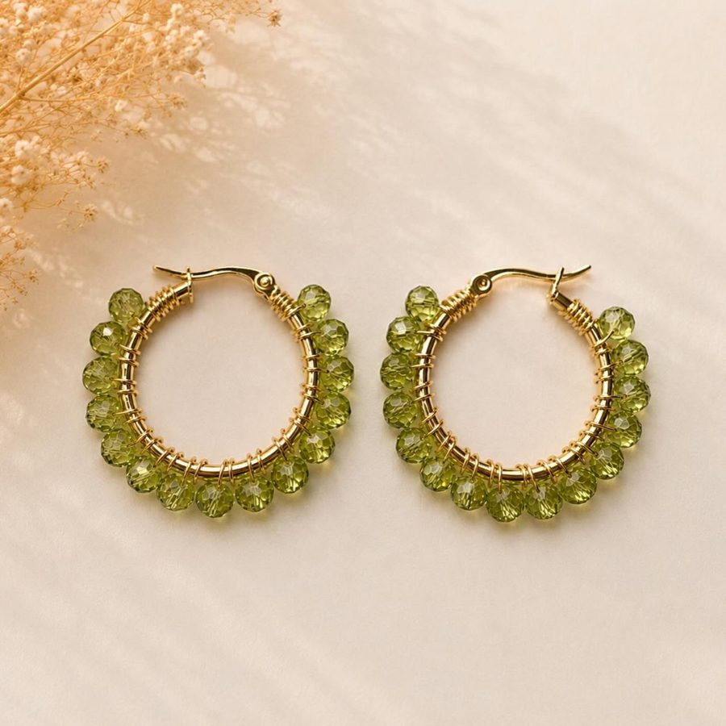

Argollas Cristal Verde Olivo
Código AG-003 · Argollas de cristal
$6.990
Disponible
- Medida
- Aprox. 3cm de Ancho y 3cm de Largo
- Material
- Base de acero quirúrgico
- Hecho
- A mano en Chile
- Color
- Verde
- Colección
- Argollas de cristal
- 🚚 Envío a todo Chile: $2.990 en la RM · $3.990 a regiones
- 💳 Paga con Mercado Pago o transferencia
- 🛡️ 3 meses de garantía por fallas · ver política